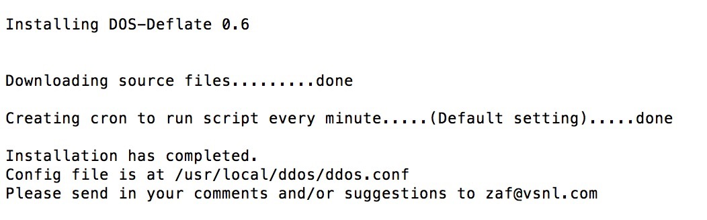

ddos检测与防御
方法一:iptables(需要手动添加)
方法二:DDoS deflate 可以自动屏蔽ip
通过netstat监测跟踪创建大量网络连接的IP地址，在检测到某个结点超过预设的限 制时，该程序会通过APF或IPTABLES禁止或阻挡这些IP.
如何确认是否受到DDOS攻击？
执行：netstat -ntu | awk '{print $5}' | cut -d: -f1 | sort | uniq -c | sort -n
执行后，将会显示服务器上所有的每个IP多少个连接数。
每个IP几个、十几个或几十个连接数都还算比较正常，如果像上面成百上千肯定就不正常了。
1、安装DDoS deflate
wget http://www.inetbase.com/scripts/ddos/install.sh //下载DDoS deflate
chmod 0700 install.sh //添加权限
./install.sh //执行
安装: 
2、配置DDoS deflate(DDoS deflate的默认配置位于/usr/local/ddos/ddos.conf )
PROGDIR="/usr/local/ddos"
PROG="/usr/local/ddos/ddos.sh"
IGNORE_IP_LIST="/usr/local/ddos/ignore.ip.list" //IP地址白名单
CRON="/etc/cron.d/ddos.cron" //定时执行程序
APF="/etc/apf/apf"
IPT="/sbin/iptables"
FREQ=1 //检查配置时间间隔，默认1分钟
NO_OF_CONNECTIONS=150 //最大连接数，超过这个数IP就会被屏蔽，一般默认即可
##### APF_BAN=1 (Make sure your APF version is atleast 0.96)
##### APF_BAN=0 (Uses iptables for banning ips instead of APF)
APF_BAN=1 //使用APF还是iptables，推荐使用iptables
KILL=1 //是否屏蔽IP，默认即可
EMAIL_TO="1679550318@qq.com" //当IP被屏蔽时给指定邮箱发送邮件，推荐使用，换成自己的邮箱即可
BAN_PERIOD=600 //禁用IP时间，默认600秒，可根据情况调整
blog comments powered by Disqus